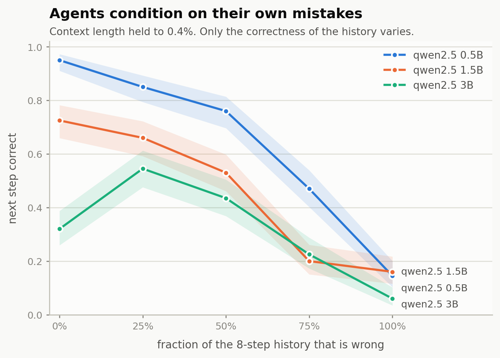
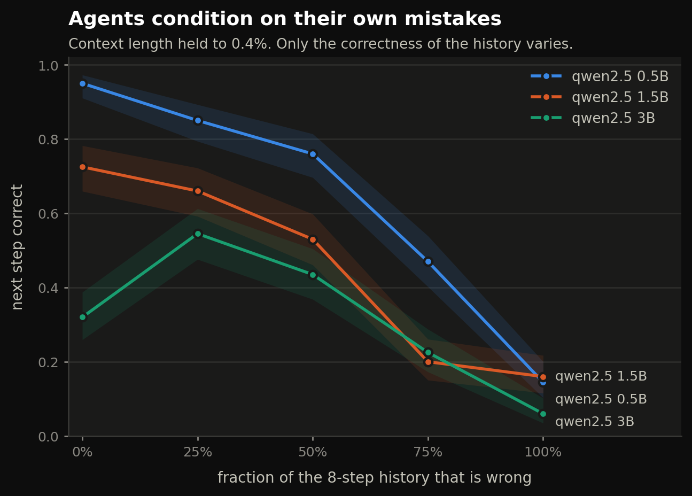
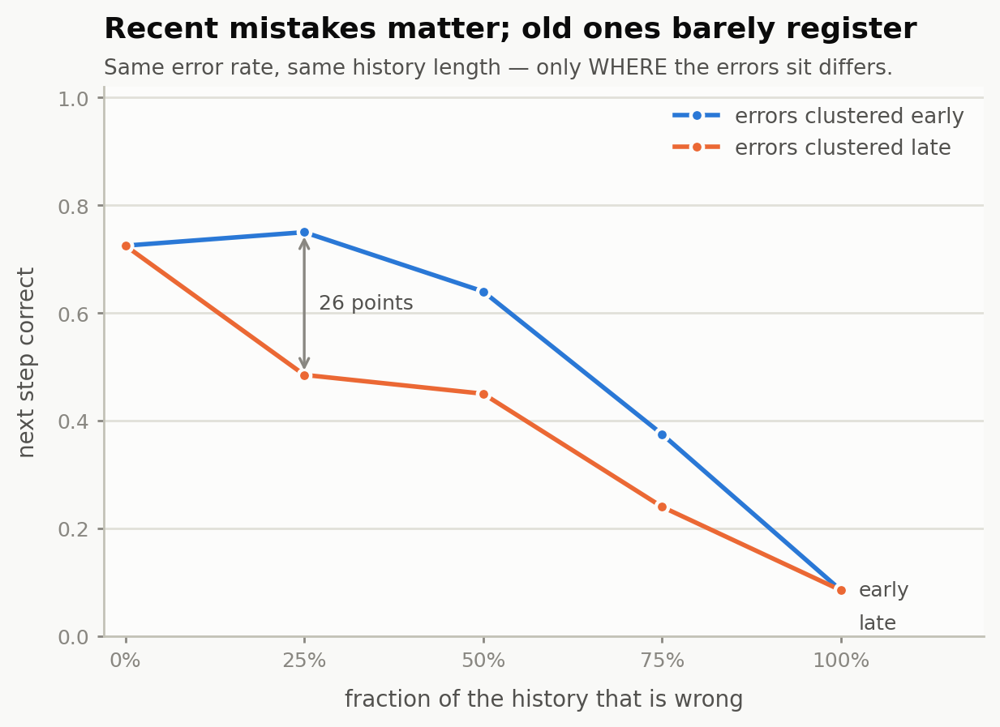
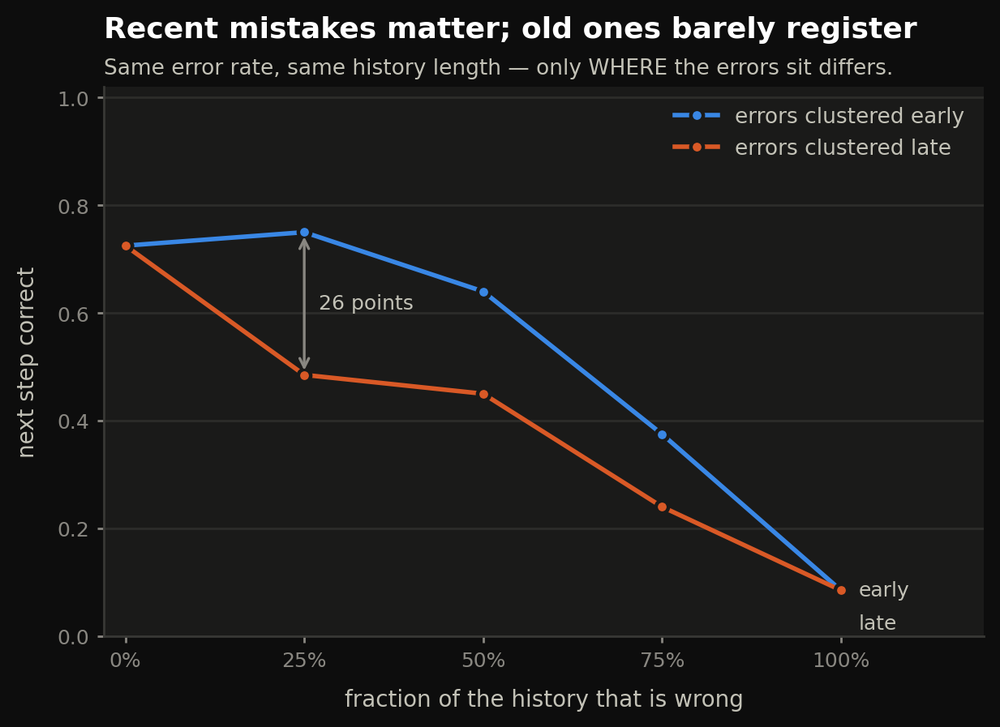
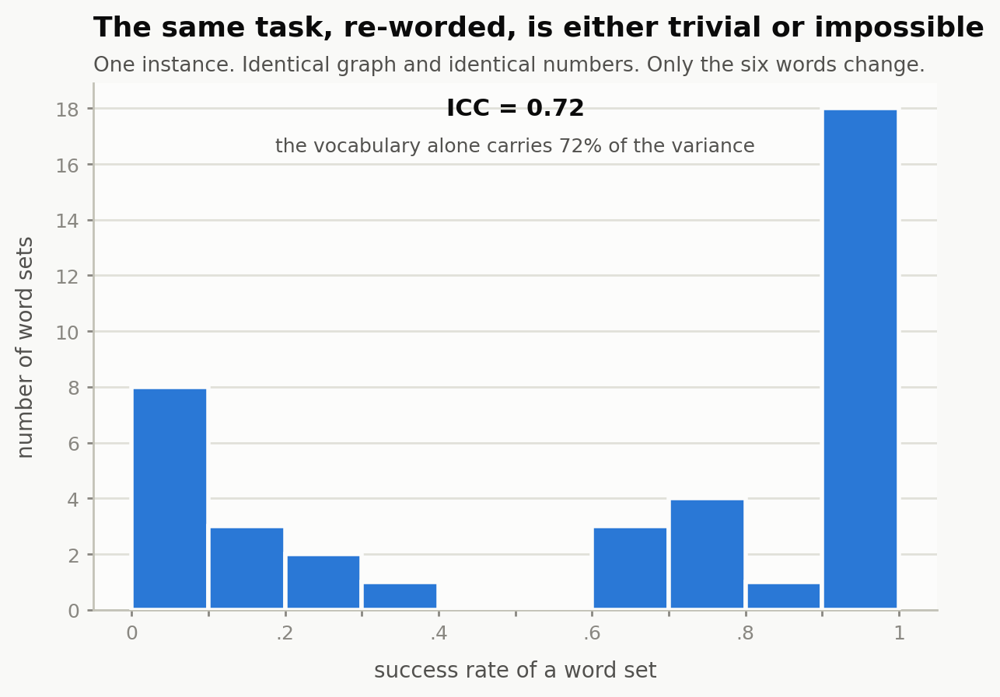
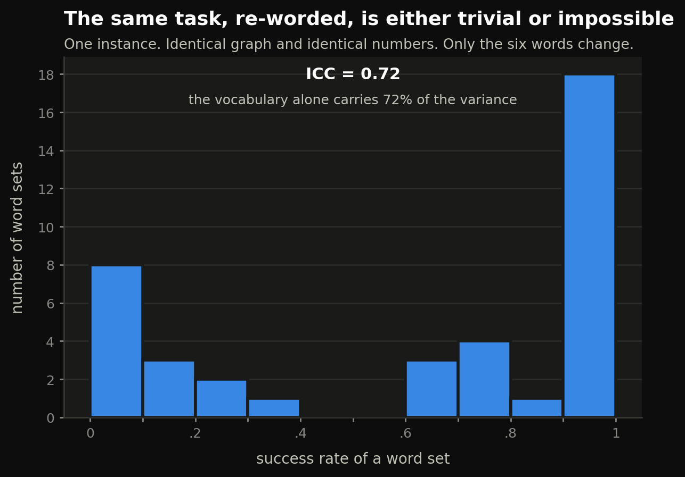

7,560 episodes on an 8 GB MacBook Air. Agents condition on their own mistakes — and which arbitrary English words a task happens to use decides whether they finish it at all.
Two results, from the same small environment.
First: build an agent a transcript of its own past work, corrupt some fraction of it, and hold the length within 0.4%. With a clean history the model picks the wrong record zero times in 200. With a corrupted one of identical length, it does so 24% to 54% of the time — on every model size tested.
Second, and stranger: take one task instance. Keep the graph. Keep the numbers. Change only the six five-letter English words used as identifiers. Success ranges across the entire 0.00–1.00 span, and the distribution is bimodal — eleven word sets at 0.1 or below, eighteen at 0.9 or above, and not one anywhere in between 0.4 and 0.6. The vocabulary alone accounts for 72% of the variance.
Agent benchmarks report a success rate. That number hides two different things.
The first is that agents condition on their own errors. Sinha et al., The Illusion of Diminishing Returns (NeurIPS 2025) showed this on a synthetic arithmetic task, and their Appendix I explains why they could not do the controlled version on real agentic work:
there are multiple distinct points of failure within a single trace: an error in the retrieval step (looking up an incorrect value) or an error in the composition step (an arithmetic mistake). A controlled experiment would need to systematically manage the type, frequency, and location of these injected errors, making the setup intractable.
In a tool environment with a ground-truth oracle at every step, it is tractable. This measures the frequency and location axes.
The second is that "difficulty" may not be a property of the task at all. Khanal et al., Beyond pass@1 attribute super-linear decay in agent success to within-run error correlation. But a gap between the mean of p and (mean p)^T is also exactly what task heterogeneity alone produces — Jensen's inequality — with zero within-run dependence. The words heterogeneity, frailty and random effect do not appear in that paper. Here the heterogeneity is measured directly, and it is enormous.
A pointer-chase ledger. Each record holds a value and the id of the next record. The agent starts somewhere known, follows the chain, and submits the total. Four properties, each enforced by test:
Every step is graded twice. on_canonical is absorbing — one wrong turn and everything after is off. locally_correct is conditional: given where the agent actually is, was this the right move? An agent that misreads one pointer and then follows the wrong chain flawlessly is locally correct throughout. Without that second view the two hypotheses are indistinguishable, because the absorbing view is zero after the first error by construction.


| injected error rate | 0.5B | 1.5B | 3B |
|---|---|---|---|
| 0% | 0.95 | 0.72 | 0.32 |
| 25% | 0.85 | 0.66 | 0.55 |
| 50% | 0.76 | 0.53 | 0.43 |
| 75% | 0.47 | 0.20 | 0.23 |
| 100% | 0.14 | 0.16 | 0.06 |
The cleaner cut is the wrong-record rate — the agent choosing a record that isn't the one its own last observation points to:
| 0.5B | 1.5B | 3B | |
|---|---|---|---|
| healed history | 0.00 | 0.00 | 0.00 |
| fully corrupted | 0.49 (97/200) | 0.24 (49/200) | 0.54 (107/200) |
Zero in 200 on every model — then a quarter to a half, with nothing changed but whether the past steps were right.
The obvious objection is that a model might notice the history went astray and jump back to the canonical path, which a conditional oracle would score as wrong. Tested: only 8–12% of wrong targets are canonical records, and 77–86% are unrelated. One probe in 200 restarted from the top.


| rate | errors early | errors late |
|---|---|---|
| 0% | 0.72 | 0.72 |
| 25% | 0.75 | 0.48 |
| 50% | 0.64 | 0.45 |
| 75% | 0.38 | 0.24 |
| 100% | 0.09 | 0.09 |
At a 25% error rate, where the errors sit is worth 27 points. Old mistakes are nearly free — early-clustered errors leave the model slightly above baseline. Recent ones are ruinous. The arms converge at 0% and 100%, as they must, which is a useful internal check.
This is the location axis Appendix I called intractable. I have not found it published anywhere.
Share of probes that gave up and submitted on a perfectly healed history — at step 8 of a 14-record chain, with nothing in the transcript indicating the chain had ended:
| 0.5B | 1.5B | 3B |
|---|---|---|
| 5% | 27.5% | 68% |
That is why the 3B's baseline reads 0.32. It is not failing to navigate; it has a strong prior that it must be finished by now. Three points is a trend, not a law — this one wants a fourth model.


Independently, across 12 genuinely different instances at chain length 6, ICC is 0.784, with per-instance rates of 0.00 0.07 0.07 0.60 0.93 0.93 0.93 0.93 0.93 1.00 1.00 1.00. The pooled "70% at n=6" describes almost no actual instance; the mean sits in the empty middle of a bimodal distribution.
Every failure on the impossible instances is a premature submit. Navigation is never the problem. Knowing the task isn't finished is.
| candidate | test | result |
|---|---|---|
| tokenization | prompt length across 40 word sets | flat at 353 tokens, r = 0.011 |
| the numbers | revalue, hold words and graph fixed | easy instances stay at 0.90–0.98 |
| graph structure | same words and numbers, 3 topologies | identical — 0.66 on all |
| abstractness | curated abstract vs concrete pools | inconclusive, and retracted (below) |
Also null: letter overlap (r = 0.06), shared initials (r = 0.32, dead after multiple comparisons), repeated letters (r = −0.12), distinct letters (0.04).
What makes a word set hard is open. That is the honest state of it.
The parser rejected {"total": 67 - 2 - 46} — which is 19, the correct answer. That parse failure then sent the model into a six-step prose spiral, degrading from the right expression to a wrong number: declining accuracy after a first error, format collapse, step-cap meltdown. A textbook self-conditioning cascade, produced entirely by my own scorer poisoning the context.
Had it reached the full run it would have yielded a complete, plausible dataset supporting the thesis, undetectable from outside. It was found by reading transcripts, not by reading summary statistics.
(2509.09677's Appendix H hit the same behaviour in Qwen3-8B — "the model trying to cheat, and do the entire summation inside the <answer> tags" — and counts it as an error. Here it is repaired and the repair recorded, so strict and lenient numbers stay separable.)
The first injection implementation let wrong turns land on dead-end records, so high-error histories ran 49% shorter than healed ones — which would have made long-context degradation look exactly like self-conditioning. That is the precise confound the healed-history control exists to eliminate, reintroduced by the control's own implementation. Caught by the test written for that property.
A curated-vocabulary experiment seeded its word draws with hash(arm), which Python randomises per process. Two runs of the identical command produced opposite readings. It was found by re-running everything from a clean tree, and it had already generated a conclusion I believed and had planned to build on. The experiment is excluded from the findings above and marked inconclusive in its own source.
An earlier interpretation was overturned the same way: calibration suggested the 0.5B "cannot follow a pointer." On a healed history it scores 0.95 — better than the 1.5B — and collapses hardest under injection. Calibration had been observing it inside its own already-derailed trajectories.
hash() bug above.Because the question needs many repeats of the same task, and that is the one thing paid APIs make uneconomical. Published work stops at k=3 (Beyond pass@1), k=4 (τ²-bench) or k=8 (METR). The lexical finding needed 40 word sets × 10 repeats on a single instance to become visible at all, and the injection result needed 5,000 probes. Locally, inference is free and the only cost is wall-clock.
The constraint that forces small models is the same constraint that makes the sample size affordable.
Code, raw episodes and figures: github.com/Ani-2003-HD/agentfrailty. Every table here regenerates from results/ with scripts/analyze.py and scripts/plot.py.
Prior work on the same machine: quantcost — what quantization actually costs in quality.